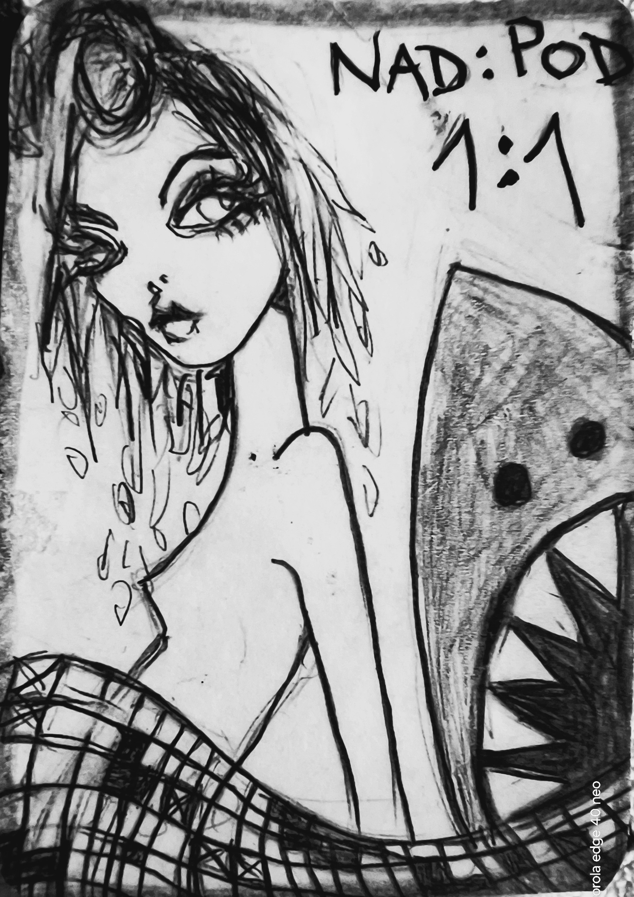

Ilustrace se nepodařilo načíst z očekávané cesty.')">Žralok
Původní text a ilustrace jako figura a pozadí jednoho jevu. Samostatná výpočetní jednotka, bez slučování s jinými kartami.
Zdrojový text: 1609 znaků. Segmentace je automatické souvislé seskupení odstavců do deseti bloků, nikoli ručně potvrzené významové hranice. Měření je lokální TF-IDF baseline, nikoli neuronový embedding.
Zdrojový text
Vlastní úseky karty
Úseky jsou souvislé bloky původního textu. Kliknutím rozbalíš celý přesný text každého úseku.
TF-IDF · kosinová geometrie · PCA · H0
A · Matice kosinových vzdáleností
B · PCA projekce
C · Persistentní homologie H0
D · Nejbližší a nejvzdálenější dvojice
Text + ilustrace jako jeden jev
Text a ilustrace jsou dva vstupy jedné karty. Samostatné textové měření neříká, zda si obraz s textem významově odpovídá, odporuje, doplňuje ho nebo do něj vnáší další informaci. To vyžaduje skutečný multimodální embedding obou vstupů ve společném modelovém prostoru.
Numerický obrazový vektor ani společná textově-obrazová vzdálenost nejsou vypočítány. PCA osy jsou lokální pro tuto kartu a nejsou přímo srovnatelné napříč kartami.